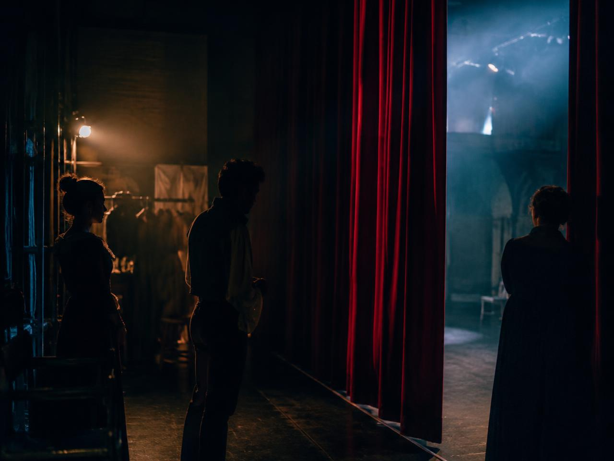

O início
Um grupo de amigos cansado de descobrir os melhores concertos só no dia seguinte.
Sobre

O Fora de Cena nasceu de uma frustração simples: as melhores noites no Porto descobriam-se sempre tarde demais — por um cartaz colado numa porta, por um amigo de um amigo.
Por isso juntámos numa só agenda a programação dos principais espaços da cidade e os encontros pequenos que raramente chegam às agendas: concertos em casa, leituras em livrarias, cineclubes de associação, oficinas em garagens, fado nos degraus.
Somos um projeto independente, feito por gente que vive o Porto e quer vê-lo cheio de gente nos sítios certos.
Um grupo de amigos cansado de descobrir os melhores concertos só no dia seguinte.
Uma agenda onde um recital numa sala de estar tem o mesmo palco que uma ópera.
Um site com a programação de toda a cidade, dos auditórios às garagens.
Dar visibilidade aos pequenos encontros culturais do Porto e ligar cada pessoa ao que acontece perto de si.
30
espaços na agenda
14
bairros
25
encontros fora de cena
Um recital numa sala de estar aparece com o mesmo destaque que uma ópera no Coliseu. A escala não define a importância.
Quem organiza não paga para estar na agenda. Basta enviar a informação e nós tratamos do resto.
Da Foz a Campanhã, do Bonfim a Miragaia. Procuramos o que acontece em todos os bairros, não só no centro.
Responsável pela página Início.
Responsável pela página Catálogo & Calendário.
Responsável pela página Contacto.
Responsável pela página Sobre Nós e Galeria & FAQ.